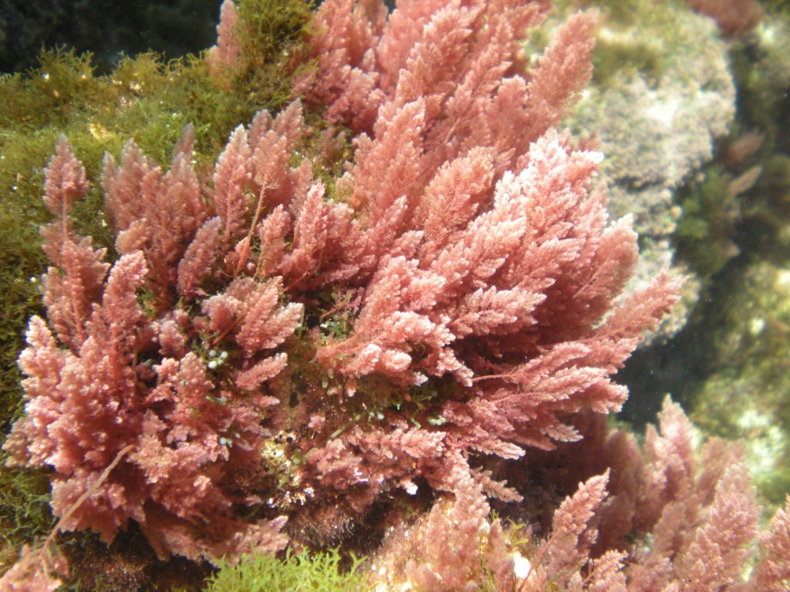
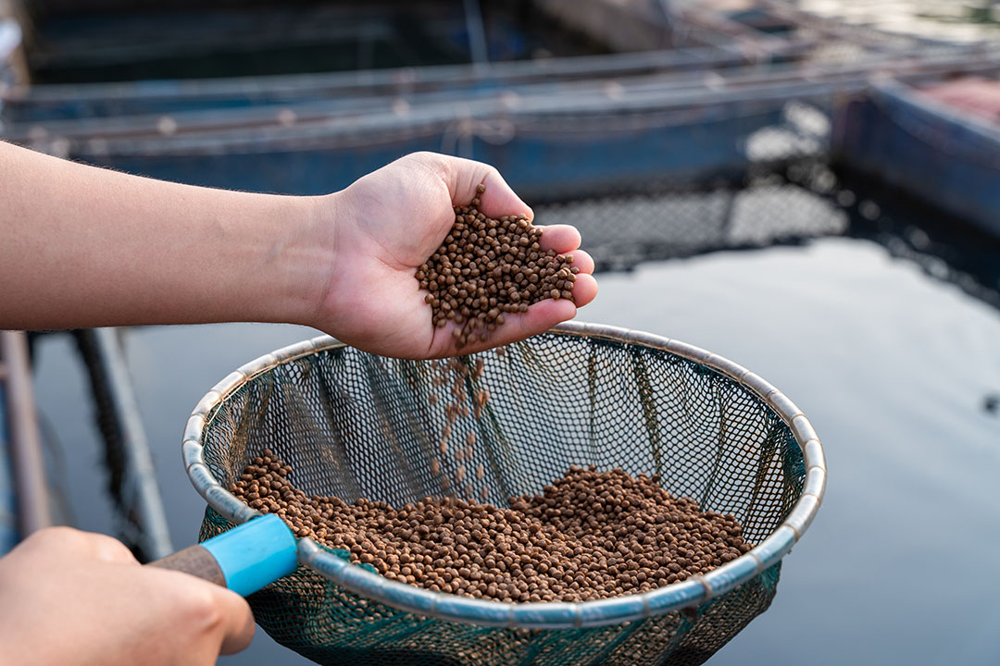
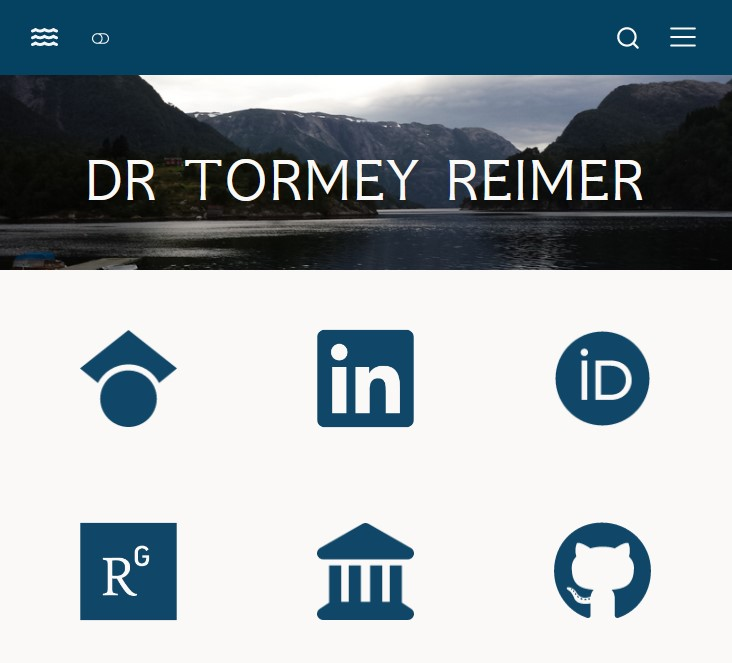
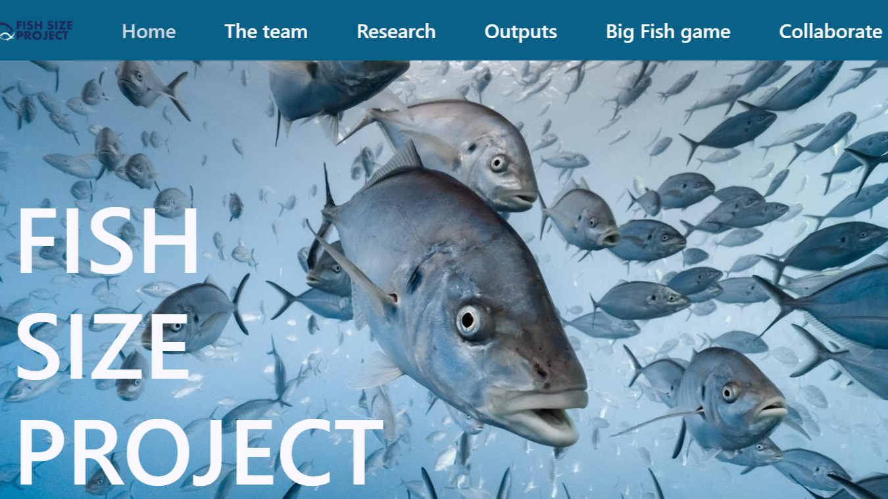
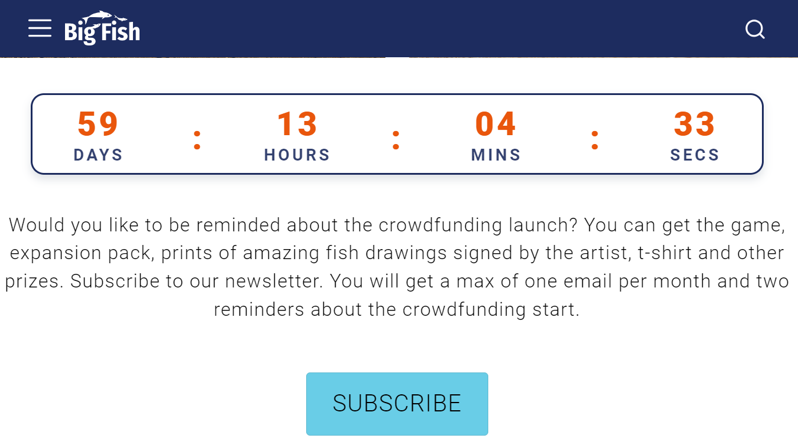

Dr Tormey Reimer
Current projects

Investigating the bioremediation potential of seaweed aquaculture across Australia
I am currently working with Dr Katie Cresswell on an FRDC-funded project to investigate the bioremediation potential of native seaweed aquaculture across Australia.
Project details
Macroalgae farms can be used to remove excess nutrients (primarily nitrogen) from coastal marine waters. Despite having a rich diversity of native macroalgae species, the seaweed farming industry in Australia is in its infancy. Demand for seaweed and seaweed-derived products continues to increase, however, and native Australian genera like Asparagopsis are of particular interest.
This project is using a macroalgae growth model created by Scott Hadley that I further developed during my PhD to assess the bioremediation potential of a number of Australian macroalgae species in a culture setting. In addition to using my own expertise and the knowledge available within IMAS, I am also working with the Australian Sustainable Seaweed Alliance to incorporate famers’ perspectives and knowledge into the modelling effort.
Optimising feeds to support ecosystem-based aquaculture
I will soon be working with Professor Julia Blanchard on an ARC Linkage Grant developing new ways of assessing the environmental and social impacts of alternate sources of protein in fish food. See the full project and the latest research outputs here.

Project details
This project aims to assess the global and local consequences of changing feeds in aquaculture by developing a new interdisciplinary sustainability assessment framework. The project expects to generate new methods to understand and predict local farm-to-ecosystem changes and global environmental footprints under contrasting feed and climate scenarios by integrating field data with novel experiments, modelling techniques and global mapping of terrestrial and marine feed raw materials and their impacts. Expected outcomes include new methods to assess ecological, social and economic trade-offs under different feeds to inform decision making in support of an ecosystem-based approach to aquaculture spanning global to local scales.
Past projects

This website
What could be a better use of my time as I wait for feedback on my PhD thesis than slowly moving more and more of my life into RStudio? I designed and built this whole website using Quarto.
While the site is technically done, I’ll continue to update it now and then as I have the time. In particular I want to stay up to date on my blog.
Why did I do this?
Don’t get me wrong, I like all the various tools and services available to researchers nowadays. But when you’re expected to keep your ResearchGate, GoogleScholar, WebOfScience, LinkedIn and OrcID profiles up to date (not to mention your various lab websites, institutional platforms, journal accounts, and whatever we eventually decide to replace Twitter with) it can all get a bit much.
I really wanted a central place to consolidate all my stuff. Anyone who wants to find information on me, my projects, or my work can now come straight to the source.

FishSize Project Lab
The whole reason I learned to use Quarto is because the FishSize Project Lab was looking for someone to revamp their website. It was a steep learning curve but I think the website looks pretty good now!

BigFish
After working on the FishSize Project Lab website I got to work on the much more ambitious BigFish game website project. This one really stretched the capabilities of Quarto and forced me to properly learn the intricacies of CSS and SASS.
Upcoming projects
I’m pretty slammed with work right now… but I really should be publishing work from my thesis. I’ll get to it soon!